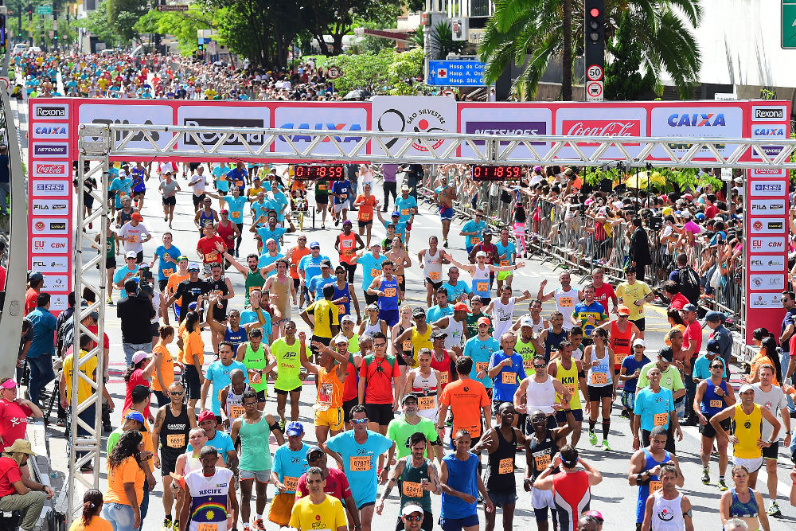

About Marathon Skills 2015
 |
|
|  |  |
Marathon Skills is a running festival held every year in a different part of the world. There can be three events: a Full Marathon, Half Marathon and a Fun Run - so the festival caters to all abilities and experience.
In past years, marathons have been held in Osaka,Japan (2014); Leipzig, Germany (2013); Hanoi, Vietnam (2012) and York, England (2011).
This year, Marathon Skills is very excited to be partnering with São Paulo, Brazil to put on the biggest running festival yet. Brazil's financial centre and the biggest city in South America, São Paulo will be on display to the thousands of runners who will weave their way past skyscrapers, green parks and magnificent architecture.
This festival has attracted a record number of runners from all over the world. Attention will be on the contingents from Kenya and Jamaica as we hope to see Dawit Admasu's 2014 São Silvestre time broken. (The Ethiopian completed the race in 45 minutes 4 seconds.)
The carnival atmosphere promises entertainment for all spectators as well as a party to round off the festivities in Ibirapuera Park.
- The events:
- The "Samba" Full Marathon will start at Rua dos Americanos at 6am on 5 September 2015.
- The "Jongo" Half Marathon will start at 7am on 6 September 2015. Runners will depart from near the intersection of Rua Ciniciata Braga and Avenida Brigadeiro Luís Antõnio.
- The "Capoeira" 5km Fun Run will start at 3 pm on 6 September 2015. Our fun runners will start from the UNINOVE Memorial.
Thank you to all the volunteers who will be helping!